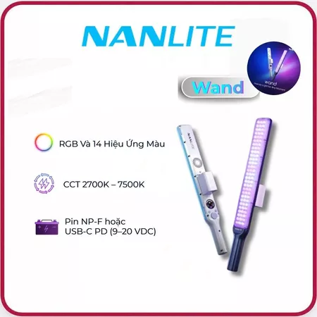

Quan trọng nhất là MIC: Khán giả có thể xem tiếp một video hình ảnh mộc mạc, nhưng âm thanh rè hay vọng tiếng sẽ khiến họ quẹt qua ngay lập tức. Đi học chỉ cần mang điện thoại sẵn có, nhưng nếu xác định làm video lâu dài thì đây là 3 món ngon – bổ – rẻ đã được kiểm chứng kỹ, mua đúng không bị phí tiền:
Âm thanh quyết định 70% trải nghiệm xem. Tùy theo ngân sách, bạn chỉ cần chọn 1 trong 2 loại sau là đủ dùng:
Cắm đầu thu vào điện thoại là thu ngay, nhỏ gọn, tiện lợi, đủ dùng cho người mới bắt đầu mà chưa cần đầu tư nhiều.
Xem Mẫu Ulanzi (Lazada) ↗Chất âm và khả năng lọc ồn sạch hơn, độ trễ thấp cho ai xác định làm video lâu dài.
Xem Mẫu DJI Loại 1 (Lazada) ↗Chân máy kiêm gậy cầm tay gọn nhẹ, tương thích MagSafe hít điện thoại cực nhanh. Dễ dàng để bàn quay Talking Head hoặc cầm đi quay Walk & Talk mà không sợ mỏi tay.

Đèn LED dạng thanh (Wand) nhỏ gọn công suất thực 30W. Mọi người khởi đầu với một đèn, bởi vì quay bằng điện thoại không cần phải công suất lớn quá.